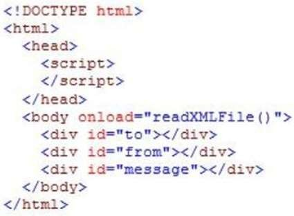
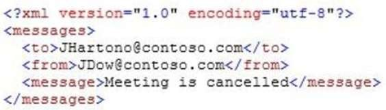
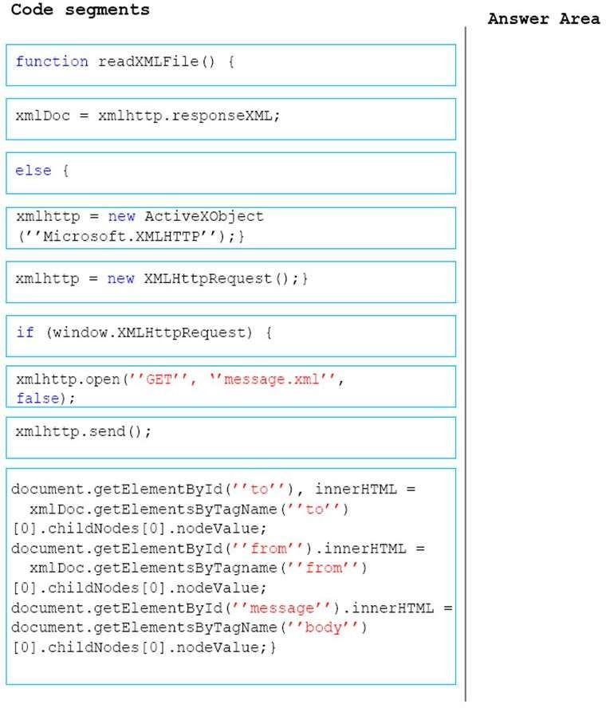
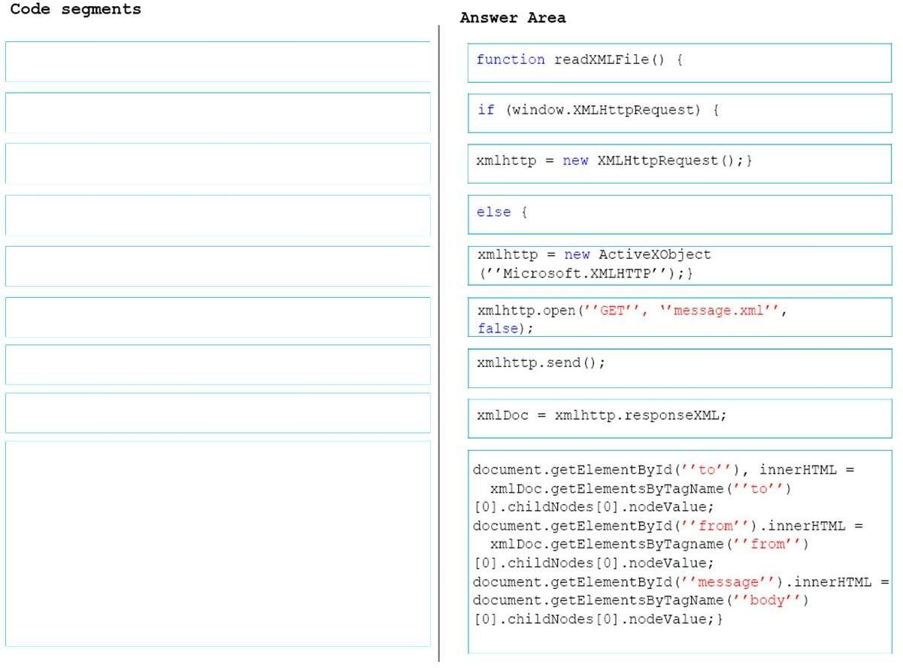

|
DRAG DROP
You have a webpage that includes the following markup:

An XML file named message.xml resides on a web server. The structure of the file is as
follows:

You are developing a code-based solution to parse the contents of the XML file and display the
information on the page.
The solution must work on both modern and older browsers.
You need to display the information from the XML file onto the page.
In which order should you arrange the code blocks to develop the solution? To answer, move
all code blocks from the list of code blocks to the answer area arrange them in the correct
order.
NOTE: Each correct selection is worth one point.
Select and Place:

Correct Answer:

Section: Volume D
Explanation
Explanation/Reference:
Explicación
Para poder hacer el ejercicio práctico hay primero crear un archivo xml al lado del servidor. Este archivo xml
contiene la información que se va a enviar del servidor al cliente. El archivo creado se llama "xmlfile.xml".
El ejercicio se hace en el visual code usando el servidor del plugin "live server" así podemos simular el servidor remoto.
- 1. Crear el objeto xmlhttp que es que se encarga de todos los procesos
- 2. Abrir la conexión con el servidor usando el objeto: xmlhttp.open("GET", "xmlfile.xml", false)
- 3. Enviar la petición al servidor: xmlhttp.send()
- 4. Crear el xmlDoc atraves del cual se obtiene las ramas e información del documento xmlfile por medio del códig
xmlDoc = xmlhttp.responseXML;
- 5. Utilizar xmlDoc para obtener la información del xmlfile y pasar (pintarla) en el documento hmtl por medio
del código:
document.getElementById('to').innerHTML = xmlDoc.getElementsByTagName('to')[0].childNodes[0].nodeValue;
<script>
function readXMLFile(){
if(window.XMLHttpRequest){
xmlhttp = new XMLHttpRequest();
}
else{
xmlhttp = new ActiveXObject('Microsoft.xmlhttp');
}
xmlhttp.open("GET", "./xmlfile.xml", false);
xmlhttp.send();
xmlDoc = xmlhttp.responseXML;
document.getElementById('to').innerHTML = xmlDoc.getElementsByTagName('to')[0].childNodes[0].nodeValue;
document.getElementById('from').innerHTML = xmlDoc.getElementsByTagName('from')[0].childNodes[0].nodeValue;
document.getElementById('message').innerHTML = xmlDoc.getElementsByTagName('message')[0].childNodes[0].nodeValue;
}
</script>
Respuesta:
Aquí abajo se muestra la información que ha sido traida desde el servidor:
Fuentes:
https://www.w3schools.com/xml/dom_httprequest.asp
https://xhr.spec.whatwg.org/
|